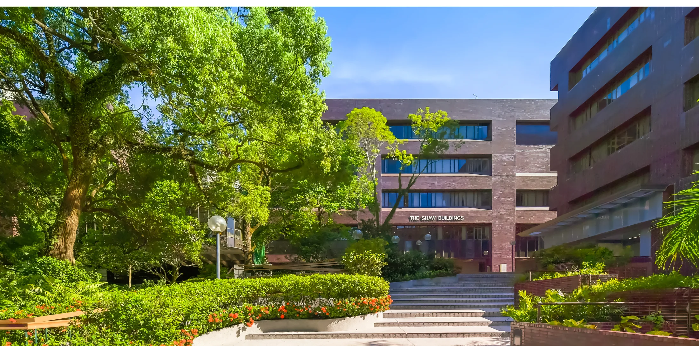

Fully funded study
Successful candidates are normally supported through Postgraduate Scholarships (PGS). Exceptional applicants may also compete for the HKU Presidential PhD Scholar Programme (HKU-PS) and the Hong Kong PhD Fellowship Scheme (HKPFS).

PhD, postdoctoral, research assistant and visiting opportunities at the Situated Reality Lab.
We invite applications for:
Our research lies at the intersection of HCI, AI, and XR, with current interests in intelligent interactive systems, multimodal and embodied AI, spatial intelligence, and human–AI interaction for XR and smart glasses.
The University of Hong Kong (HKU) is one of the world’s leading research universities, with a highly international academic community and strong support for interdisciplinary research. The Department of Data and Systems Engineering brings together expertise in AI, data science, systems engineering, HCI, robotics, and automation.
HKU’s Vision for 2026–2035 connects teaching and learning, research, and knowledge exchange under a shared ambition: Leadership for Impact. That is a natural home for our aim to turn situated intelligence into systems that matter beyond the lab. The figures below draw on HKU’s First and Foremost institutional record, updated in June 2026.
Successful candidates are normally supported through Postgraduate Scholarships (PGS). Exceptional applicants may also compete for the HKU Presidential PhD Scholar Programme (HKU-PS) and the Hong Kong PhD Fellowship Scheme (HKPFS).
Alongside regular project funding, outstanding early-career researchers can pursue the RGC Junior Research Fellow (JRF) Scheme and the HKU Presidential Research Assistant Professor (PRAP) position.
Please share your materials after September 1st, 2026 using the PhD application form. We will not review applications submitted before this date.
In the meantime, you are welcome to express your interest by emailing me (xianghci@hku.hk) with your CV, GPA, and a brief cover letter outlining your past and current projects, how they have shaped your research interests, and how these align with our lab’s focus.
HKU-PS/HKPFS candidates: Please get in touch at any time to share your materials for early review. I am always looking for exceptional fellowship applicants!
We are actively seeking talented postdoctoral researchers through regular project funding and other funded research opportunities. In addition, outstanding early-career researchers are encouraged to contact us regarding prestigious fellowship and career-development opportunities, including the RGC Junior Research Fellow (JRF) Scheme and the HKU Presidential Research Assistant Professor (PRAP) position.
Please use the Post-Doc / RA / Visiting application form to share your interest and materials. If you have any questions, please feel free to email me at xianghci@hku.hk.
RA and visiting positions are generally for three months or longer.**
Shorter or remote engagements may be considered for students currently in HCI labs or applying through supervisor recommendations. Please submit the Post-Doc / RA / Visiting application form.
Self-funded PhD positions are possible, but please contact me directly for more information. If you have further questions, please refer to the FAQ below.

We are particularly interested in applicants with strong technical backgrounds who can build and evaluate end-to-end interactive systems.
We are looking for people who can turn an ambitious research question into a working system—and evaluate it rigorously.
Proficient programming and hands-on Unity (C#) experience, with the ability to deliver end-to-end prototypes, toolkits or demos.
Experience with VLMs, LLMs, NLP, computer vision or multimodal AI—or a demonstrated ability and motivation to learn.
Practical experience designing, implementing and systematically evaluating interactive systems or applied AI.
Applicants with design backgrounds are highly welcome when they also demonstrate strong technical design and implementation skills.
Strong applicants combine academic preparation with clear research potential, technical depth and a compelling reason to pursue the work.
Exceptionally qualified PhD applicants are strongly encouraged to apply for the HKU Presidential PhD Scholar Programme (HKU-PS) and the Hong Kong PhD Fellowship Scheme (HKPFS).
Competitive candidates typically demonstrate an outstanding undergraduate record—often within the top 10%—together with strong research experience and/or publications in leading venues.
Applicants are generally expected to hold a Bachelor’s degree with First Class Honours (above 3.7/4.0), preferably with research experience; or an Upper Second Class Honours degree (above 3.3/4.0) together with a research-oriented Master’s degree awarded with merit or distinction.
For applicants from Mainland China, receiving the National Scholarship (国家奖学金) at a top 985 university is highly advantageous, alongside a strong EECS background, research proposal and relevant experience.
Most successful applicants are offered Postgraduate Scholarships (PGS), unless they have external funding or are supported through joint programmes.
I would closely support most first- and second-year students to help establish strong research habits and a solid foundation. As you progress and gain confidence, I gradually transition to a more hands-off approach, encouraging independence and ownership of your research. I will not continuously supply ideas for your PhD project. Although I will be closely involved in discussions, the PhD is not meant to be a process of executing pre-assigned tasks. You are encouraged to develop your own research direction and articulate why it is valuable.
Above all, my job is to support your success in your future career—a principle my own PhD supervisor shared with me when I joined Cambridge—and I will do my best to help make that happen. I also strongly value diversity, equality, and inclusion. If you have any concerns, please raise them: see it, say it, sorted!
I do not personally place strong emphasis on GPA or publication counts alone. However, the University has formal eligibility requirements that must be satisfied. In general, we expect applicants to demonstrate a strong undergraduate academic background, typically within the top 10% of an EECS (or closely related) programme at a well-recognised university (for example, top 20 in China). That said, I care far more about research potential, technical depth, creativity, curiosity, and long-term research fit than raw GPA numbers.
Applicants whose undergraduate degree classification falls below an Upper Second Class Honours standard (<3.3/4.0 GPA equivalent) would NOT meet the minimum requirement for enrolment.
Naturally, strong publications and excellent academic records can be advantageous, particularly when applying for competitive fellowships and scholarships such as HKU-PS or HKPFS, as they help demonstrate research capability and potential. However, I strongly discourage publishing simply to increase the number of papers on your CV. I do not primarily evaluate applicants based on venue prestige or publication count alone.
What matters most to me is whether you genuinely understand the work you have done, can clearly articulate your thinking, and take pride in your research. If you have publications or projects (which are certainly a plus), I will usually read them carefully and ask both high-level conceptual questions and technical implementation questions during interviews.
Again, having a CHI paper or any top-tier publication is absolutely NOT a prerequisite. What matters far more is your willingness to learn deeply, think critically, work independently, and commit to doing meaningful and high-quality research over the long term.
If you have submitted your application via the form, I will review all materials every two weeks. If you haven’t heard from me for more than 1 month, please assume your application has not been moved to the next stage.
You are also welcome to start a conversation if you happen to see me at the HKU campus or any conferences. I’m always happy to chat, and I’ll gladly treat you to a soft drink or a coffee.
To be fair to all applicants, I will NOT be able to provide detailed feedback on your PhD research proposal. However, I’m happy to share my research interests and offer brief comments on your potential directions during our conversation, if shortlisted. Please prepare your proposal to align with my interests, and revise it slightly based on our discussion.
Yes, but usually not during your first year. During this period, the focus should be on developing strong independent research skills. Once you have established a solid level of independence, collaborations outside the group or university are highly encouraged. In practice, after submitting your first solo piece of work (co-authored only with me) is typically a good milestone for making this transition.
In short: at least three solid, independent research projects that can be woven into a coherent and compelling PhD thesis—one that convinces both your examiners and me that “yes and congratulations, you should be a Dr. now!”
Keep writing. Keep polishing. Keep submitting. If I am satisfied with your work, it is not necessary for every piece to be accepted or published. The reasoning is explained below.
I am well aware that peer review can be something of a lottery. Not getting a paper accepted does not define your ability as a researcher. I do not require a specific number of CCF-A/B/C or CORE-A/A* (or equivalent) papers for graduation. While strong publications are often beneficial for your career—and yes, the counting game exists and isn’t disappearing anytime soon—I strongly dislike reducing PhD training to paper counts.
While CCF/CORE rankings themselves are not a priority, it is important to submit your work to the most relevant research community. Publishing in a venue where the audience is unfamiliar with or uninterested in your topic is rarely beneficial. In general, we aim for SIGCHI- or VGTC-sponsored conferences, as well as other closely related journals. Venues such as CHI, UIST, TOCHI, IEEE VR, ISMAR, and TVCG are typically regarded as the most prestigious in our field.
That said, smaller but core venues are equally valued when they are the right fit for the work—for example, SUI, VRST, DIS, ISS, CSCW, UbiComp, and related conferences/journals. The key principle is relevance and impact within the appropriate community, rather than venue rankings alone.
Yes. We value a supportive group culture. We hold weekly or bi-weekly group meetings, along with other academic and social activities. We also care about life outside of work and aim to maintain a healthy balance. Any group member is encouraged to organise their interesting events.
Absolutely! I strongly encourage every PhD student in my group to spend time—at least once during the PhD (3 months or longer)—in industry or at another strong research lab. I’m happy to help with planning, applications, or connections.
Yes. All students with first-authored full papers are expected to present their work in person, and I will provide funding for this. Ideally, each student should attend at least one conference per year. Being active and visible within your research community is an important part of PhD training.
If your funding (partially or fully) comes from my industry-sponsored or collaborative projects, then participation in such projects is expected. If you are supported by your own funding (e.g., a fellowship or scholarship), the situation is much more flexible. In this case, I would appreciate your support for collaborative projects when appropriate, but it is not mandatory. You are always welcome to say, “Sorry, I’m not interested in this project!”
Yes, although this is uncommon. Self-funded arrangements may be considered in cases where you are highly motivated to join our lab but funding is limited. Please think carefully before choosing this option. A PhD is a 3-to-4-year commitment, and academia is ultimately a job—just as a PhD is a degree. You should consider self-funding only if you have a genuine passion for the field and intend to continue working in this area in the future.
Even if you are self-funded, you must still meet the minimum admission requirements of the Department and the standard graduation expectations of the lab; these requirements are not relaxed.
In some cases, I may also consider offering additional financial support, such as hiring you as a part-time RA, to help partially offset the costs where possible.
Just ask!
If you’re interested in collaborating with me on a research project, Dr. Jarrod Knibbe’s blog is a good place to start. UW Makeability Lab, led by Professor Jon Froehlich, also has a great Lab Handbook.
Normally, you should have read most of these before you conduct any research with me.
More to be added. Feel free to email me with book/website recommendations that influenced you a lot!